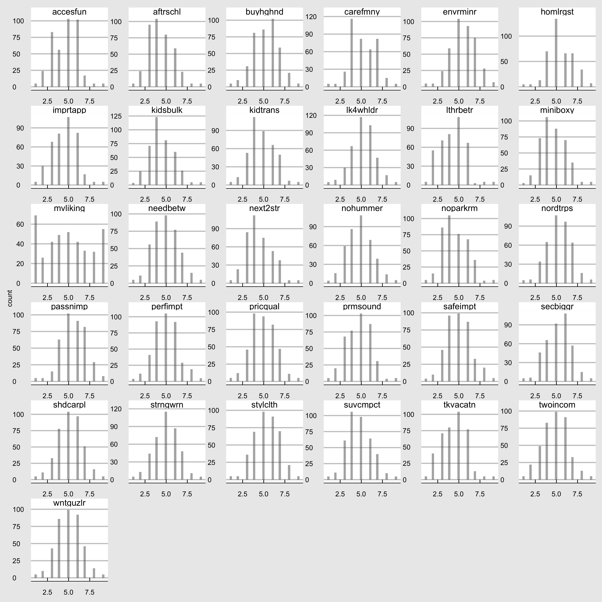
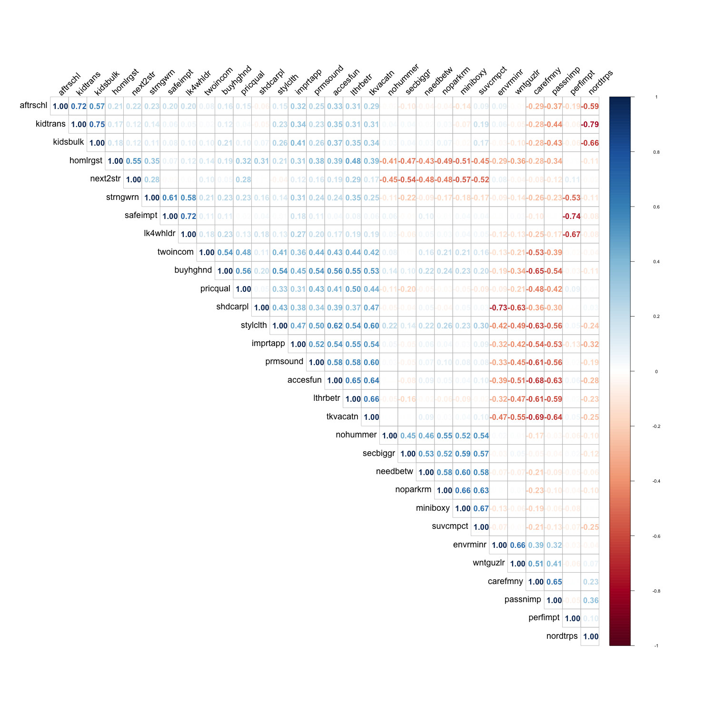

Chapter2 Explorative Data Analysis
# data
dataPath = file.path(dataDir, "microvan.csv")
microvan = read.csv(dataPath, sep=";")
# Convert all integer variables into numeric ones for futher work
microvan <- as.data.table(lapply(microvan, as.numeric))
# data description
description = psych::describe(microvan) %>%
as.data.frame() %>%
tibble::rownames_to_column(.,var="variable") %>%
dplyr::select(vars,everything())%>%
dplyr::rename(., "variable id" = "vars")
# columns that need to be formatted
numCols = c("mean",
"sd",
"median" ,
"trimmed",
"mad",
"min",
"max",
"skew",
"kurtosis",
"se")
DT::datatable(
description,
rownames = F,
fillContainer = T,
options = list(
pageLength = 10,
scrollX = TRUE,
scrollY = TRUE
)
) %>%
DT::formatRound(columns = numCols , digits = 1)2.1 Histogram
microvan_df = microvan[,2:32] %>%
gather()
microvan_hist =
ggplot(microvan_df, aes(value)) +
facet_wrap(~ key, scales = "free",ncol = 6) +
geom_histogram(alpha = 0.5, position = "identity") + theme_economist_white() +theme(axis.title.x = element_blank())
microvan_hist_path = file.path(plotDir, "microvan_hist.png")
ggsave(
filename =microvan_hist_path,
plot = microvan_hist,
width = 4000,
height =4000,
units = "px"
)## `stat_bin()` using `bins = 30`. Pick better value with `binwidth`.

Figure 2.1: Variable 2-32
2.2 Correlation Analysis
2.2.2 Correlation Matrix
# plot name
corrPlot = file.path(plotDir, "corrPlot.png")
cor_with_mvliking <- cor(vars[,-1])
png(
filename = corrPlot,
width = 1500,
height = 1500
)
corrplot(cor_with_mvliking,
method="number",
type="upper",
order = "hclust", # reorder by the size of the correlation coefficients
tl.cex = 1.5, # font size of the variable labels
tl.col = "black", # color of the variable labels
tl.srt = 45, # rotation angle for the variable labels
number.cex = 1.4 # font size of the coefficients
)
invisible(dev.off())
2.2.3 Normality test
options(digits = 3)
df_test= microvan[, 2:32]
lshap = df_test%>%
summarise_all(.funs = funs(#statistic = shapiro.test(.)$statistic,
p.value = shapiro.test(.)$p.value)) %>%
t() %>%
as.data.frame() %>%
tibble::rownames_to_column(., var = "variable") %>%
dplyr::rename(., pvalue = "V1") %>%
# data is normal if the p-value is above 0.05
dplyr::mutate(normality = case_when(pvalue > 0.05 ~ "normal",
pvalue <= 0.05 ~ "not_normal"))
normal_v = lshap%>%
filter(normality =="normal") %>%
pull(variable)
shapiro.test(df_test$mvliking)##
## Shapiro-Wilk normality test
##
## data: df_test$mvliking
## W = 0.9, p-value = 1e-13